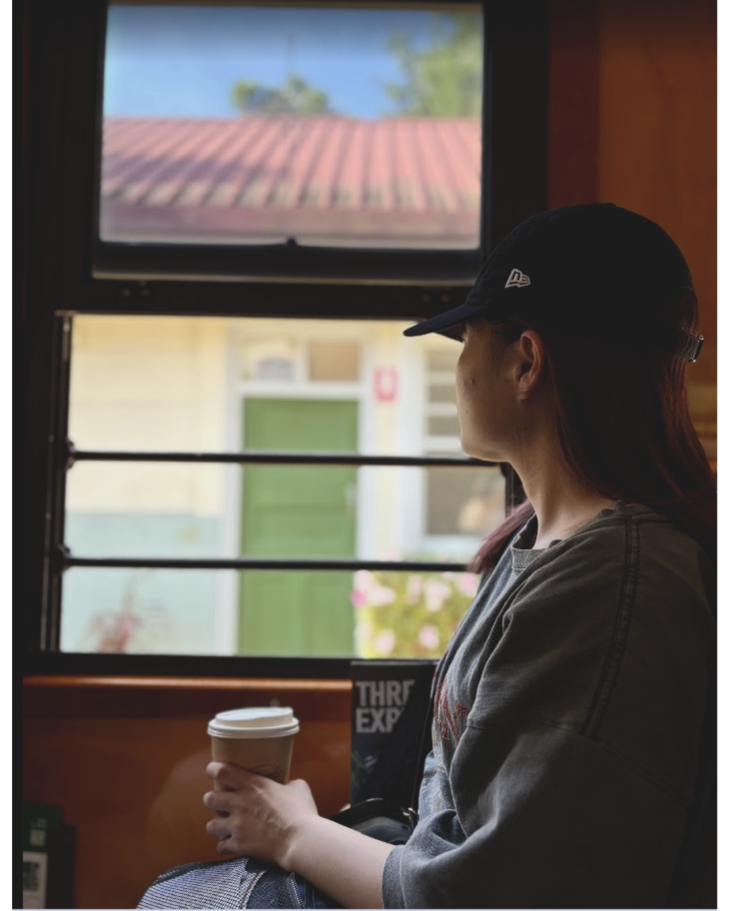
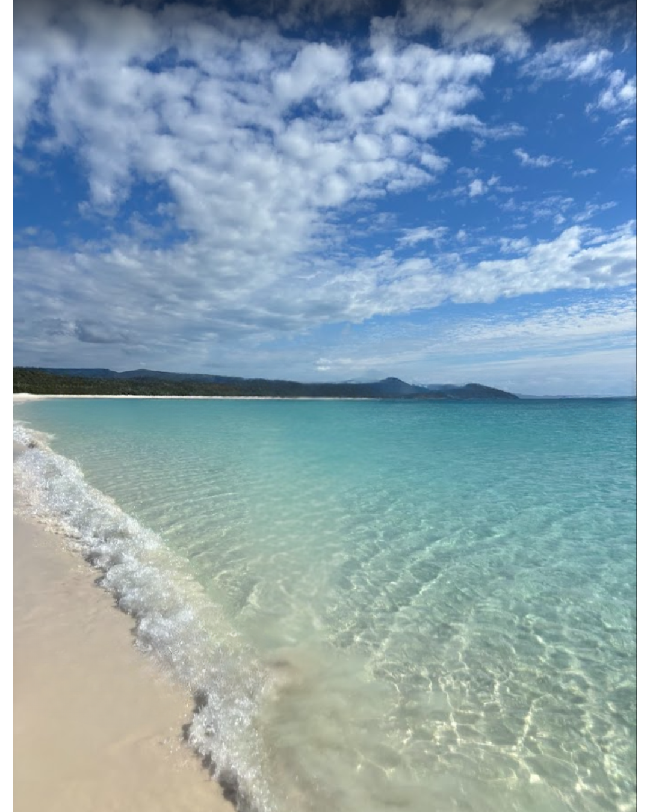
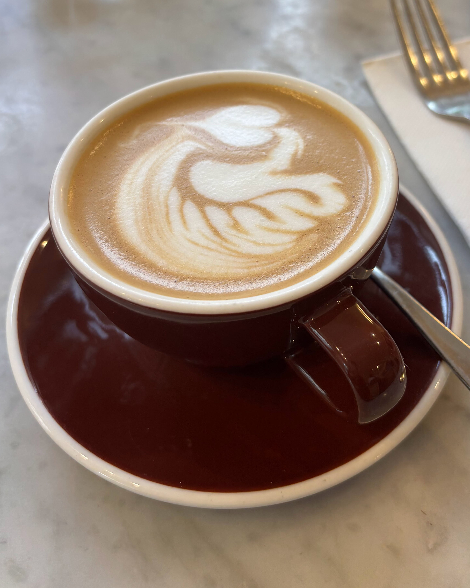
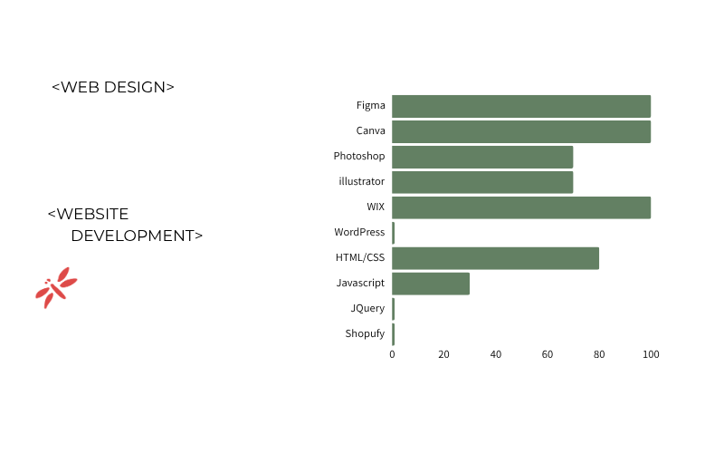
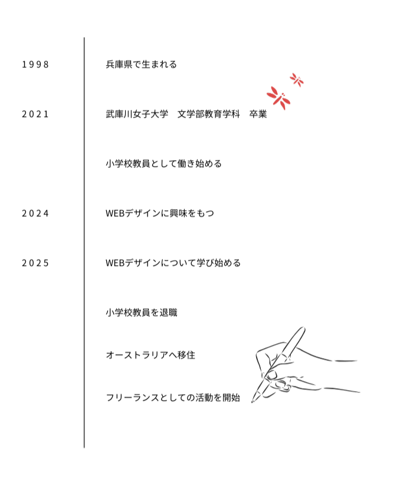

About me
わたしについて



Skill
できること

Career
今までのこと

Strength
とくいなこと
1. ユーザー視点のロジカルなデザイン
「誰に、何を、どう伝えるか」という目的を第一に考え、フォントの可読性や視線誘導を意識したデザインを提案します。
2. スピード感のある柔軟な対応
「日本との時差（+1時間)を活かし、迅速なレスポンスと柔軟な修正対応を心がけています。急ぎの案件もお気軽にご相談ください。
3. 最後までやり遂げる責任感
タスマニアでの過酷なファームワークを完遂した経験から、どんな状況でも納期を遵守し、プロジェクトを最後まで責任を持って担当します。
4. 英語を活かしたリサーチ
英語でのコミュニケーションや海外サイトでの素材探し・トレンド調査が可能です。グローバルな視点を取り入れた制作に対応します。